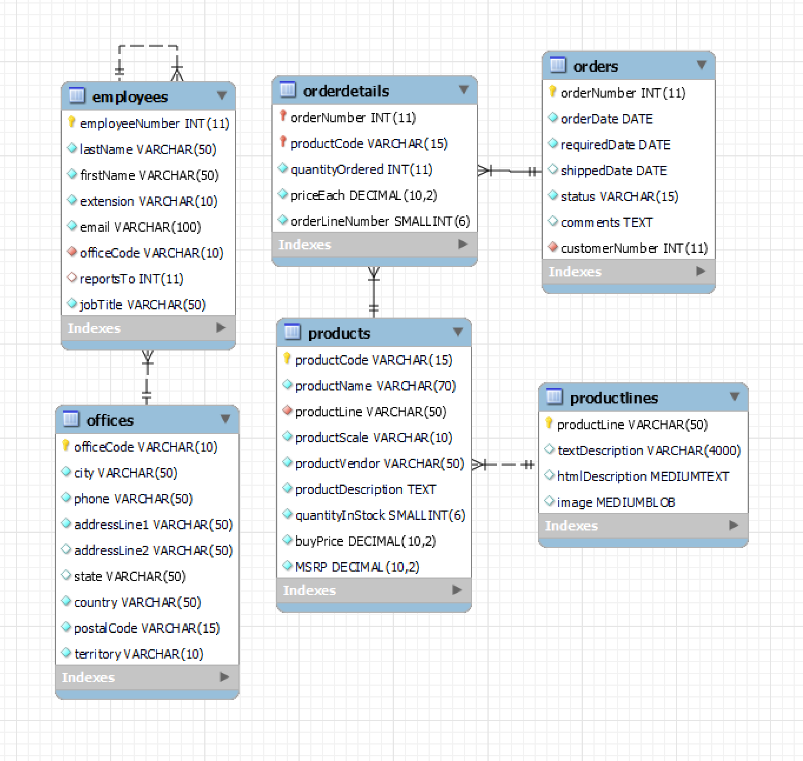
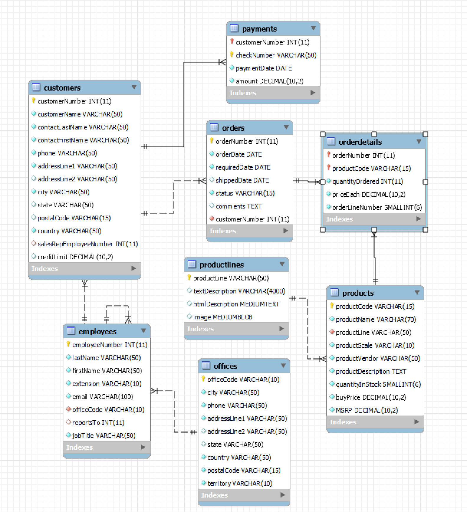

Hey Pawel, this page is meant to be a documentation to my DB I created for ya. Here are your credentials for connecting to DB:
mysql -h mysql-sibu.mysql.database.azure.com -u pawel -p
Here is a schema for your user where you can see what tables you can perform SELECT. You can only perform INSERT on offices and employees tables
Here is a picture of full schema of the DB so you know, which tables there are hidden for you if you compare it with previous picture(you cant execute any SQL on them).
